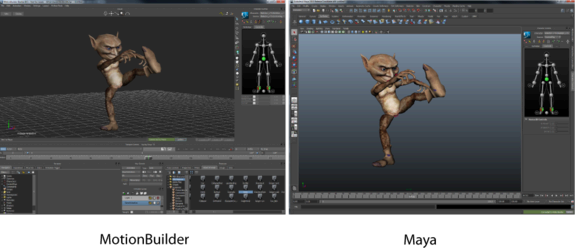

- 文件 > 发送到 MotionBuilder(File > Send to MotionBuilder)
注： 仅当您安装了目标应用程序的同等版本时，
“文件 >
发送到...”(File > Send to...)选项才会显示在
Maya 的
“文件”(File)菜单中。例如，仅当您安装了 MotionBuilder 2022 时，
Maya 2022 才会为 MotionBuilder 提供“发送到”(Send to)选项。
使用“发送到”(Send to)命令可在 Maya 和 MotionBuilder 之间传递 HumanIK 角色数据，这意味着您无需将角色从 Maya 导出到 FBX，即可将其导入到 MotionBuilder。
注： 也可以使用“发送到”(Send to)命令将标准对象和动画以及 HumanIK 角色发送到 MotionBuilder。
